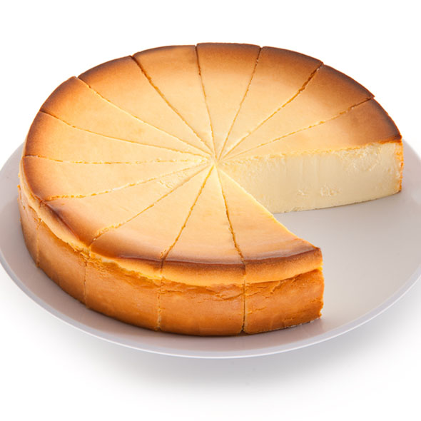
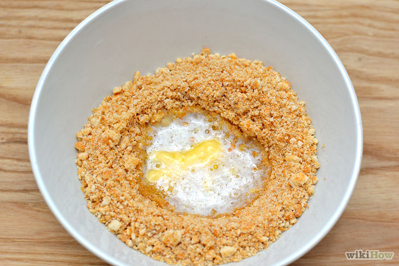
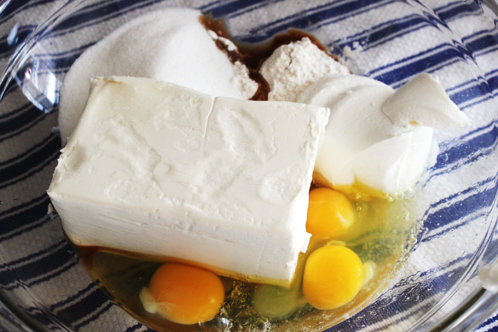
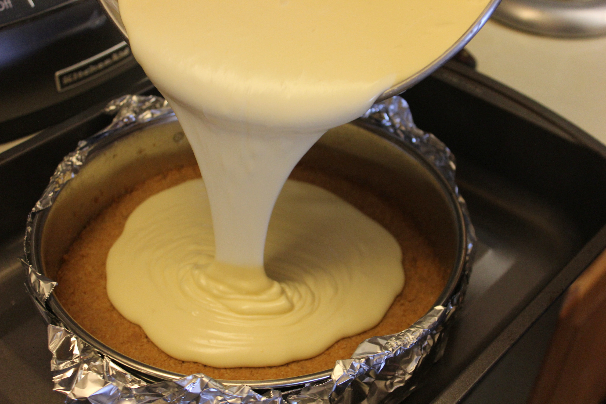

Baking made easy

Baking made easy
Home Button
Baking made easy
INGREDIENTS:
FOR THE CRUST:
4 ounces graham crackers, broken into pieces
1/4 teaspoon coarse salt
1/3 cup sugar
4 tablespoons unsalted butter, melted
FOR THE FILLING:
2 1/2 pounds cream cheese (5 8-ounce packages), room temperature
4 ounces unsalted butter, room temperature
8 ounces sour cream, room temperature
1 1/2 tablespoon all purpose flour
1 3/4 cups granulated sugar
5 large eggs, plus 2 egg yolks
Zest of 1 lemon
1 teaspoon vanilla extract
Baking made easy
Next step
Home Button
Baking made easy


Crust and Mixing:
Butter the bottom and sides of a 9- by 13-inch springform pan.Line the sides of the pan
with 4-inch-high strips of parchment and butter the parchment.
In a food processor, pulse graham crackers with salt and sugar to fine crumbs.
Add butter and pulse until fully incorporated. Press evenly into bottom of prepared
springform pan and bake until crust is golden brown and set, 15 minutes. Remove
from oven and transfer to wire rack to cool 10 minutes.
In a large stand mixer fitted with the paddle attachment, beat cream cheese, butter, and sour cream with sugar until light and smooth.
Beat in eggs one at a time until fully incorporated. Beat in remaining egg yolks, zest, and vanilla extract the longer you mix it the more fluffy the final cake will be.
Next step
Baking made easy
Home Button
Baking made easy

Baking:
Crisscross two long pieces of foil and place a piece of parchment on top.
Place springform in center of foil and wrap foil tightly around bottom and sides of pan.
Transfer to a roasting pan, pour filling into springform pan, and smooth the top.
Pour boiling water into roasting pan to come halfway up the sides of the
springform pan and carefully transfer to oven. Bake for 15 minutes at 450 lower to 200 bake for
1 1/4 hours leave in over and turn off let sit in over for 30 minutes with the door closed.
After 30 minutes open oven door slightly and let sit for 30 more minutes. Lift cheesecake from water bath,
remove foil and parchment from outside of springform, and chill cheesecake in refrigerator for at least 8 hours.
Baking made easy